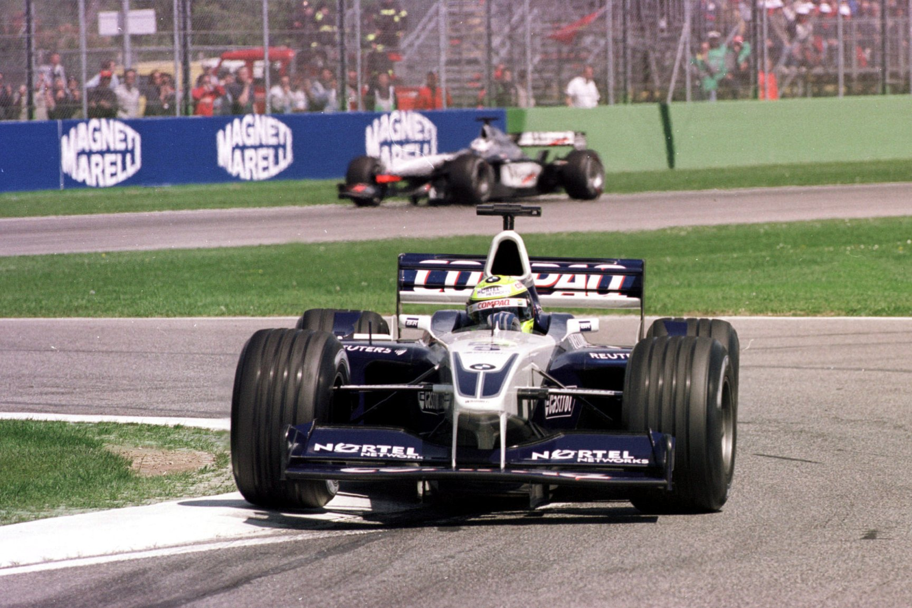
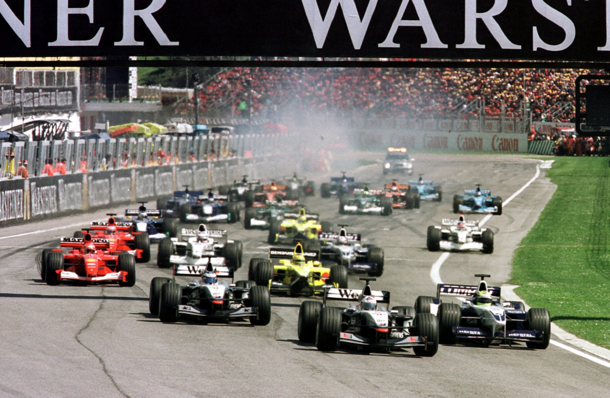
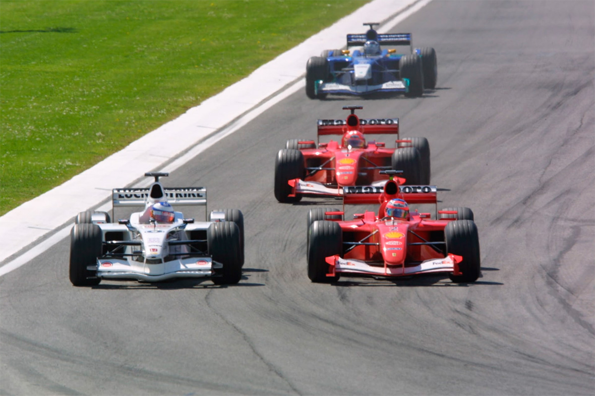
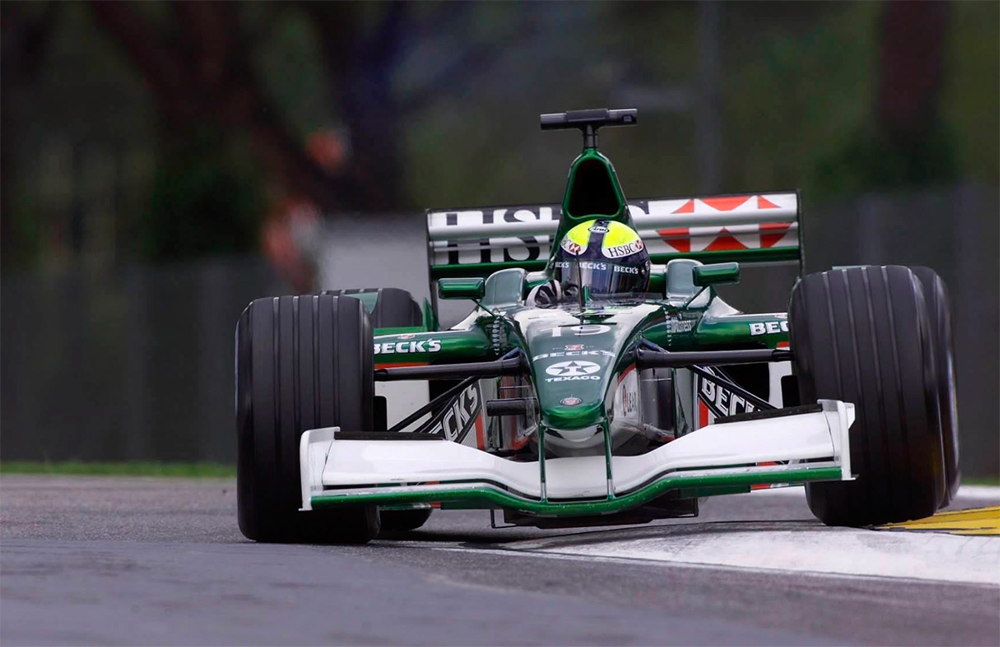
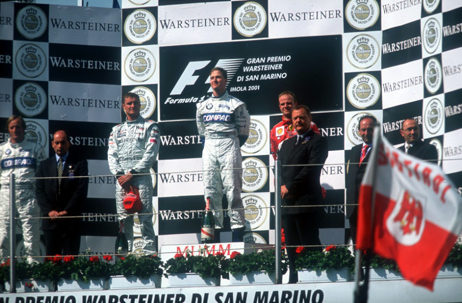
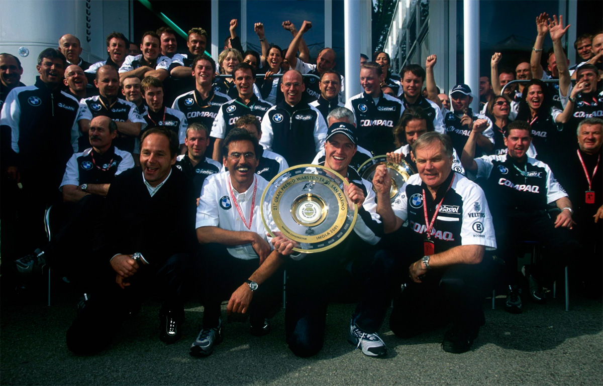
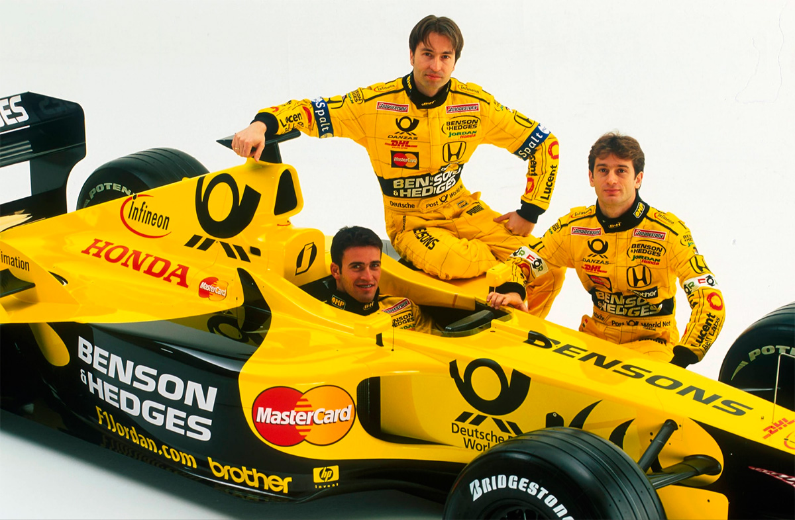

A VEZ DE RALF!

Ralf Schumacher vence em San Marino o seu primeiro Grande Prêmio de Fórmula 1 e mostra que a Williams BMW está no páreo:
POR AMERICO TEIXEIRA JR.
Foram necessárias somente quatro corridas para que se confirmasse o que já parecia plenamente possível desde a primeira corrida do ano. Melbourne pôde ver uma Williams de tal maneira evoluída que, para muitos, estava no box comandado por Frank Williams e Patrick Head a organização que poderia tirar a Fórmula 1 da dualidade monótona representada por Ferrari e McLaren. E isso ficou caracterizado de forma inequívoca no Grande Prêmio de San Marino, disputado pela 21a vez no circuito italiano Enzo e Dino Ferrari, em imola, Itália, vencido por Ralf Schumacher de ponta a ponta. Ao cruzar a linha de chegada, vencendo pela primeira vez na Fórmula 1, depois de completar 62 voltas em 1h30min44s817 (média horária de 202,062 km/h), esse alemão de 25 anos fez história. Coube ao irmão mais novo do tricampeão Michael Schumacher — o primeiro a abraçar o vencedor da 4ª etapa do Campeonato Mundial de Pilotos e Construtores — a condição de primeiro vencedor de um Grande Prémio de Fórmula 1, sem estar ao volante de Ferrari ou McLaren, desde a prova de Nurburgring, válida pelo Grande Prémio da Europa, em 26 de setembro de 1999 e faturada pelo inglês Johnny Herbert com Stewart.
No âmbito da Williams, a conquista foi muito mais ampla em seu significado. A equipe inglesa não vencia desde 28 de setembro de 1997, dia em que Jacques Villeneuve venceu o Grande Prémio de Luxemburgo com o Williams FW19 Renault. Foi também a volta ao primeiro lugar do pódio de um carro equipado com motor BMW, o que não acontecia desde o Grande Prémio do México de 1986, quando o atual diretor esportivo da BMW, o austríaco Gerhard Berger, chegou na frente com Benetton BMW Turbo — na primeira fase da BMW na Fórmula 1, entre 1982 e 1987, foram disputadas 91 provas e obtidas nove vitórias, a primeira delas pelas mãos de Nelson Piquet, com o Brabham BMW Turbo, no Canadá. Nessa festa internacional anglo-germânica, juntaram-se também as bandeiras da França e do Brasil. Para a Michelin, foi o triunfo de número 60, a primeira nessa sua volta .à categoria, após um período de 59 conquistas entre 1978 e 1984 — a primeira acontecera no Brasil com Carlos Reutemann (Ferrari 312 T3, 1978) e a última em Portugal, Gom Alain Prost (McLaren Mp4/2 Porsche). Já para a brasileira Petrobras, fornecedora exclusiva de combustível para a Williams desdes 1998, foi também a primeira vitória.

Foi um Grande Prêmio nada parecido com o do Brasil, em termos de disputa e emoção, e o único momento forte foi justamente a largada, que definiu a disputa. Embora a primeira fila estivesse ocupada pelo pole position David Coulthard e por Mika Hakkinen — o que se constituiu na primeira dobradinha em grid da McLaren na temporada —, foi Ralf Schumacher quem pulou do 3º para a liderança. Outro que largou bem foi o italiano da Jordan Honda, Jarno Trulli, que também foi beneficiado pelas largadas mais lentas de Mika Hakkinen e Rubens Barrichello, para assumir a 3ê colocação. Dessa forma, o complemento da primeira volta já apresentava uma inversão praticamente total em relação ao posicionamento original de largada: Ralf Schumacher, David Coulthard, Jarno Trulli, Mika Hakkinen, Michael Schumacher, Olivier Panis, Juan Pablo Montoya e Rubens Barrichello. No complemento da 3ª volta, enquanto Ralf Schumacher já abria quase três segundos de vantagem sobre Coulthard, Michael Schumacher teve problemas de câmbio e a Ferrari diminuiu drasticamente a velocidade na sua tentativa de engatar as marchas. O problema foi suficiente para fazê-lo perder posições para Montoya, Panis e Barrichello, caindo para o 8º posto. O Espanhol da European Minardi, Fernando Alonso, foi o primeiro a abandonar, na volta 6, depois de perder o controle do carro na Variante Alta. A seguir, foi a vez de Jos Verstappen se retirar com problemas mecânicos (volta 7) e Olivier Panis cair para 8º após ser ultrapassado por Barrichello (volta 8) e Schumacher (na 9). Os pits começaram na volta 19, com Jenson Button sendo o primeiro a parar com Benetton Renault.

O principal abandono da prova aconteceu na 24ª volta, quando Michael Schumacher deixou a primeira etapa europeia da temporada 2001 após enfrentar problemas de câmbio desde o início da prova, ficar sem freio e ter ainda um pneu furado. David Coulthard parou na volta 28 e retornou na mesma posição, o mesmo acontecendo com o líder Ralf Schumacher, na volta seguinte. Ficava evidente, portanto, que a estratégia adotada por McLaren e Williams obrigava duas paradas. Somente a Ferrari parecia querer parar uma única vez, tendo em vista que o pit de Rubens Barrichello só ocorreu na 32ª volta. A partir daí se instaurou um período de enorme marasmo na corrida, à espera da definição dos pits, momento em que se consumou a única mudança de posição significativa entre os primeiros colocados. Obedecendo a mesma ordem do primeiro pit, Coulthard, o 2º na prova, parou antes de Ralf Schumacher, mas as duas posições não foram alteradas. Barrichello fez o segundo pit na 47ª volta e conseguiu deixar Hakkinen para trás, ocupando a 3ª colocação e garantindo o terceiro pódio da temporada, o 18ª de sua carreira de 134 Grandes Prêmios e o 12ª como piloto da Ferrari em 21 participações em Grandes Prêmios de Fórmula 1 pelo time italiano.

Enrique Bernoldi conseguiu terminar pela primeira vez uma prova de Fórmula 1, concluindo o Grande Prémio de San Marino em 10º lugar. Ele não teve problemas com o Arrows Asiatech e apenas lamentou ter perdido tempo na largada, ao dividir com Luciano Burti. Já o piloto da Jaguar, mesmo tendo novamente chegado ao final de uma corrida — pela terceira vez, entre as quatro até aqui realizadas —, foi um final de semana repleto de dificuldades. Para completar, perdeu durante a prova as marchas 1, 2 e 3. Isso jogou por terra a estratégia de apenas um pit adotado pela Jaguar. Qualquer ganho teórico foi perdido com a baixa performance do final da prova. Tarso Marques, com Minardi European, deixou a prova na 55ª volta — no momento em que já acumulava cinco voltas de desvantagem para o líder — com problemas elétricos. Uma pane cortou completamente o funcionamento do V10 European (ex-Ford da temporada de 1999).

A WILLIAMS RENASCE!
O confronto exclusivo entre Ferrari e McLaren pode estar com os dias contados diante do avanço da Williams:

Nas últimas temporadas do Mundial de Pilotos e Construtores de Fórmula 1, mais precisamente as de 1998, 1999 e 2000, foram marcadas por uma disputa particular — e até certo ponto monótona — entre McLaren e Ferrari, com predominância da equipe inglesa. Foram dois títulos de Mika Hakkinen, contra o conquistado no ano passado por Michael Schumacher. Mas as primeiras provas do certame de 2001 estão indicando um quadro de evolução muito acentuado por parte da equipe Williams — a recordista de títulos de Construtores até o ano passado, com nove conquistas, e só em 2000 superada pela Ferrari, agora detentora de dez títulos — pode representar a inclusão de mais uma escuderia na disputa pelo premio maior entre marcas da Fórmula 1. Os fatores que contribuem para isso são vários. Em primeiro lugar, a equipe construiu um chassi de alta competência, assinado pelo diretor técnico Patrick Head e pelo projetista Gavin Fischer. O FW23, nas mãos do alemão Ralf Schumacher e do fenómeno colombiano Juan Pablo Montoya, já mostrou uma performance que colocam a Williams como a terceira força do Mundial até aqui, embora essa realidade não estivesse traduzida em números na classificação do Mundial de Construtores após as três primeiras corridas. Sauber, Jordan e BAR superavam a equipe de Frank Williams na pontuação conquistada na Austrália, Malásia e Brasil. Ainda no fator técnico, a BMW equipou o FW23 com um V10 que está dando o que falar. O time comandado por Mário Theissen, diretor técnico, e Gerhard Berger, o diretor esportivo, conseguiu disponibilizar um propulsor, denominado E41, com um enorme ganho de potência, notadamente em classificação. Apesar desse avanço já fazer muita diferença, a empresa alemã busca mais. Nesse exato momento estão sendo executados testes para fazer um motor de corrida tão potente quanto o de classificação, mas que apresente durabilidade suficiente para resistir uma corrida inteira. Esse conjunto carro/motor vem recebendo toda a injeção de entusiasmo e desenvolvimento da fábrica francesa de pneus Michelin, que tem na BMW Williams a sua maior vitrine, nessa volta à Fórmula 1 ao lado também de Benetton, Prost, Jaguar e European Minardi.
Já o terceiro fator é humano. A dupla de pilotos é de primeira linha, mas é uma das uniões mais belicosas da atual Fórmula 1. Com seus 69 Grandes Prêmios na categoria, até o Brasil, Ralf Schumacher, de 25 anos, vai para a sua terceira temporada na Williams. Foi na equipe de Frank Williams, primeiro com motor Supertec 1999) e a seguir com o BMW, que Ralf Schumacher conseguiu alguns de seus melhores tados. De um total de 88 pontos conquistados, apenas 24 foram conseguidos com a jordan (13 pontos em 1997, com Jordan Peugeot, e mais 14 com o o carro de Eddie Jordan equipado com o motor Mugen Honda, em 1998). Mas se Ralf Schumacher é um fator de peso, o que dizer do pequeno colombiano de 1,68 metro que só não venceu o Grande Prémio do Brasil por força de uma barbeiragem do piloto holandês da Arrows, Jos Verstappen? Apesar de registrar somente três provas de Fórmula 1 em seu currículo, e nenhum ponto no campeonato, Juan Pablo Montoya, também aos 25 anos, prova a cada treino ou corrida que não foi campeão da Fórmula Cart, da Fórmula 3000 e das 500 Milhas de Indianapolis por acaso. Montoya é um piloto especial. Tem habilidades que outros não têm e, sobretudo, possui a garra que faz dele um espetáculo. Talvez não caiba, no atual estágio de alta tecnologia da Fórmula 1, o seu estilo de escorregar nas quatro e de corrigir no braço uma saída de curva. Mas é justamente esse piloto de estilo agressivo que vem impressionando a Frank Williams e contribuído para que praticamente não exista um relacionamento entre os dois pilotos na equipe. Lá, nos boxes da Williams, é evidente que o primeiro inimigo a ser batido é o companheiro de equipe.
QUARTO ESTÁGIO — Esse momento pode estar revelando os primeiros passos do quarto estágio de sucesso da Williams. Estreante na Fórmula 1 em 1973 com o nome ISO, Frank Williams atuou como figurante até 1977, ano em que sequer completou todas as provas do Mundial. Mas se havia a impressão de que o chefe de equipe inglês estava se retirando, ele de fato tomava impulso para voltar mais forte ainda. Nesse sentido, em 1978, já em parceria com Patrick Head e com o patrocínio de empresas da Arábia Saudita, a equipe voltou com Alan Jones, o australiano que em 1980 conquistaria o primeiro título de Pilotos e Construtores para o time. O bicampeonato de Construtores viria no ano seguinte, temporada em que os pilotos Alan Jones e Carlos Reutemann não foram capazes de superar Nelson Piquet, mas garantiram ao patrão Williams a segunda conquista entre os fabricantes. A segunda fase de conquistas veio em parceria com a Honda. Foram conquistados mais dois títulos de Construtores (1986 e 1987) e um de Pilotos, com Nelson Piquet faturando o seu tricampeonato em 1987. Mas a grande fase ainda estaria por vir. Ao formar com a Renault uma parceria imbatível no início dos anos 90 — a ponto de Ayrton Senna classificar os modelos FW14B e FW15B como “carros de outro planeta”, foram conquistados cinco títulos de Construtores e quatro no Mundial de Pilotos. Muito mais teria sido conseguido, caso Senna não tivesse morrido apenas em sua terceira corrida pela Williams. Agora, as conquistas parecem que se avizinham. A equipe não vence desde o Grande Prémio de Luxemburgo, disputado em 28 de setembro de 1997. Na ocasião, com Jacques Villeneuve, Williams e Head faturavam a vitória número 103, marca só superada por Ferrari (137) e McLaren (131). Mas, tudo indica, há de novo o toque latino para superar essas marcas.
ENTREVISTA RICARDO ZONTA!
Enquanto era relacionado como possível substituto de Mazzacane na Prost, Ricardo Zonta falou à revista RACING durante o GP do Brasil, sobre a sua tristeza em não estar participando como titular da temporada 2001:

RACING— O que você está achando deste novo carro da jordan e do trabalho que está sendo iniciado com a Honda?
Zonta— O carro atual da Jordan é muito superior ao do ano passado, um carro que já era muito superior ao carro 2000 da BAR. Para mim, um dos melhores carros que eu guiei na vida é o da Jordan deste ano. E tem mostrado uma boa performance.
RACING— Como você sente o motor e a participação da Honda nesse processo?
Zonta— O motor, com certeza, no ano passado já era bastante rápido, um motor que tinha um torque muito bom. Agora com duas equipes, a Honda está trabalhando muito mais para ganhar, já que é o segundo ano também, para ter resultados melhores. E todos os membros da Honda trabalham muito positivo, muito certinho, então, tem ajudado muito a melhorar a performance da Jordan, também.
RACING— A gente tem a impressão de que, pelo fato de você ser experiente em testes e como piloto de Fórmlal, eles estão usando e abusando dessa sua experiência. Como é a sua rotina de piloto de testes hoje, na Jordan?
Zonta— Eu tenho que testar bastante o carro. Eu escolhi ser piloto de testes, pelas condições que eu tinha, pois no decorrer do ano aconteceram vários problemas. E tinha oportunidade de correr, também, mas numa equipe menor. Então foi escolhido ser piloto de testes com uma garantia para eu correr o ano que vem. Agora, como piloto de testes, o terceiro piloto, o piloto reserva da Jordan, eu tenho de ir em todas as corridas porque, se acontecer alguma coisa com o piloto titular, eu sou o substituto. Depois do Grande Prémio, tem uma semana de testes e aí testamos os pneus, os freios, a aerodinâmica, enfim, tudo o que vai ser usado na próxima corrida e esse é um desenvolvimento que eu tenho de fazer. Então, o carro chega no final de semana da corrida, perfeito. É só andar e fazer os ajustes mínimos possíveis para que o carro fique rápido. Acho que, como a Jordan nunca teve um terceiro piloto, nunca teve um piloto de teste oficial como reserva, eles viram que funciona e que tem como desenvolver o carro melhor do que um piloto de testes novato.
RACING — Você, evidentemente, já testou elementos eletrônicos que serão introduzidos a partir da Espanha. Qual é a expectativa? Como você acha que os carros vão se comportar a partir da Espanha? Vai ser uma coisa radical ou sutil?
Zonta — Olha, a questão do desenvolvimento do controle de tração para Jordan, em todos os testes que eu fiz, tanto na chuva, quanto no seco, não tem muita graça. No seco, o controle de tração fica um troço monótono, um troço sem graça. Talvez, não fique rápido, o carro não mude a velocidade, não seja mais rápido no tempo da volta, porque no pneu novo você não tem a patinação, não tem quase problema nenhum com a tração do carro. Mas quando o pneu começa a desgastar, começa a sair de traseira o carro, esse controle de tração segura a traseira, não deixa você esparramar na curva, não deixa você brincar com o carro. Então, fica um troço sem graça. E na chuva você ganha um segundo, um segundo e meio fácil. Porque, quando chega na metade da curva, você pode pisar todo o acelerador que o carro segura as rodas para não desequilibrar, não patinar, e com isso você ganha mais velocidade.
RACING — Quer dizer que, para o piloto, a partir da Espanha, o tesão de pilotar vai diminuir?
Zonta — Vai diminuir um pouco. Você olha o Montoya. Às vezes, como ele veio da Fórmula Cart, ele ainda não sabe os cuidados que tem de ter com o pneu. Então, ele vem totalmente de lado, atravessando, desgastando o pneu. Com isso, com a tração, você não vai ver mais na televisão, ah! O cara está guiando muito. O cara é bom. Mas você não vai mais ver isso.
RACING — Então você acha que será possível diminuir a diferença entre as equipes ou isso é ilusão?
Zonta — Isso é ilusão. Se alguém usou a má fé de ter isso antes de outras equipes aí, tudo bem. Mas equipes pequenas não vão chegar no nível das equipes grandes, no desenvolvimneto desse negócio. Queira ou não queira, a distância da equipe grande para a equipe pequena está aumentando cada vez mais. Se você for analisar a mudança que fizeram este ano no regulamento em termos de aerodinâmica, isso deixou as equipes menores mais longe ainda das maiores da Fórmula 1.
RACING — Nessa escala de grandeza, onde está situada a jordan Grand Prix, mais para time grande ou médio?
Zonta — Eu acredito que a Jordan está no mesmo nível da Williams. A Williams, para mim, é uma equipe mais do que média, todo mundo sabe que o desenvolvimento da Williams é muito bom.
RACING— Você teve, em duas oportunidades anteriores, convites do Eddie Jordan para correr por sua equipe, mas recusou. O que fez, neste momento, você aceitar? Zonta— Com certeza, se eu fosse voltar ao passado, eu teria aceito antes. Na metade do ano de 1999, o Damon Hill estava correndo ainda pela Jordan, eles queriam tirar o Hill e me colocar na equipe. Este foi o segundo convite. O primeiro foi ficar como piloto de testes para daí correr. E eu queria correr muito e acabei aceitando andar na BAR. Daí, na metade do campeonato de 1999, eles me convidaram pela segunda vez e eu fiquei com um pouco, não de remorso, mas inseguro. Não quis sacanear com a BAR, porque achei, já que eu tinha assinado com a BAR, eu achava sacanagem deixar o meu banco ali, na metade do campeonato, para ir para outra equipe. Eu acho que o meu pensamento era, talvez, primário. Porque na Fórmula 1, hoje, cada um cuida do seu interesse e nada mais. Então, se acontecesse tudo de novo, eu teria deixado para trás a BAR e teria ido para a Jordan. Mas como eu levei tudo na sinceridade, como eu sempre levei minha vida inteira — em todas as categorias em que eu andei, eu levei assim —, acabou me prejudicando. Porque eu poderia estar o ano passado na Jordan e correndo ainda este ano nela e o povo aqui (o pessoal da Jordan) é muito mais certo, mais justo com os pilotos.
RACING— Na verdade, você teve dois anos de experiência em uma equipe que não lhe deu um tratamento bom. Mas nada é jogado fora. Partindo desse pressuposto, que experiência você tirou desses dois anos de BAR?
Zonta — É, eu aprendi bastante. Aprendi como funciona a Fórmula 1, aprendi coisas assim. Mas também perdi minha confiança, a confiança de andar rápido, de andar seguro. Foram dois anos em que
eu sofri quatro acidentes. Eu nunca tinha sofrido antes na minha vida e sofri dois anos no carro da BAR. Vários erros durante o campeonato, aconteceu de tudo. Foram dois anos péssimos da minha vida. E dei um passo para trás.
RACING— Eddie Jordan, aparentemente, é um grande cara. É isso?
Zonta — É, ele é. Com certeza, até dentro da equipe, ele dá motivação para todo mundo e é diferente. Eu não dava tanto valor para ele, mas agora que eu estou aqui dentro, eu estou vendo o quanto ele ajuda a equipe. Nas horas mais difíceis, quando a coisa está complicada, ele brinca, mas a pessoa acaba levando a sério e mudando de ideia. Indo para o lado certo. Eu acho que, se todo mundo levasse assim, seria um astral bem melhor.
RACING— Você está voltando ao Brasil na condição de piloto reserva. E claro que, como profissional, você está encarando mais essa. Mas lá no fundo, isso não incomoda um pouco mais?
Zonta — Eu fico, talvez... Essa semana foi um pouco difícil, poque no Brasil, queira ou não queira, é o Grande Prémio mais especial para nós brasileiros. Para a gente que corre, é uma motivação por causa do público que vem. No no passado, eles gritaram meu nome. É um negócio especial. E sabendo que a Jordan está rápida... E queira ou não queira, como piloto de testes você já não é tão respeitado com antes. Não é respeitado como um piloto titular, mesmo de um equipe pequena. Então, acaba até sendo um pouco depressivo. Eu até estava bem triste nesta semana (que antecedeu o Grande Prémio do Brasil). Estava bem para baixo e, com certeza, eu não vejo a hora de voltar e correr de novo como titular.
RACING — Nesses momentos de maior depressão, o que você faz? Zonta— Treino fisicamente. Eu sempre fiz preparação física na minha vida e quando eu estou com um problema, alguma coisa, parece que eu acho força fazendo exercícios físicos. Limpa tudo por dentro, sabe, você fica limpo. Mesmo você passando por horas difíceis ou qualquer coisa, se você faz uma corridinha, alguma coisa de preparação física, eu termino e estou novo. Nada me atinge. Mas chega de noite, você começa a pensar, ver a reação das pessoas, que te tratam diferente. É difícil ver a reação das pessoas. Mas tem de passar.
RACING— Você continua morando em Mônaco, mas tem vindo ao Brasil com muito mais frequência, não é mesmo?
Zonta— Eu fiquei um maior tempo agora no Brasil, em dezembro e janeiro, porque só tinha um carro de testes novo e esse carro ficou para os dois pilotos titulares testarem. O meu trabalho foi o mínimo possível. Eu fiz só trabalho, com o carro antigo, de controle de tração, desenvolvimento da parte eletrônica. E agora que começaram os treinos, que tenho o meu próprio carro novo, dá para desenvolver e fazer o trabalho de testes.
RACING — Hoje você está lutando para ser titular da equipe Jordan em 2002, mas ao mesmo tempo está de olho em outras equipes. Como é isso?
Zonta — A Formula 1 é assim, a gente tinha também oportunidade de ir para McLaren, que é a top, só que a Jordan deu garantia, não 100%, mas deu 99% de garantia de que se saísse um piloto titular, eu seria o próximo. Isso é alguma coisa. E aqui na Jordan eu posso contar com a palavra deles. São pessoas que falaram e vai acontecer. Se sair um dos dois, vai acontecer. Depende também da minha performance nos testes, do meu trabalho no fim de semana, tudo. É um conjunto de coisas que tem de acontecer para voltar a correr.
RACING — O seu contrato como piloto de testes é de um ano? Consta no contrato que você assume se um dos pilotos sair?
Zonta— É de um ano. E lá consta que eu assumo se um deles sair. A chance é de 50% de eu entrar como piloto titular ou de os dois ficarem de novo. Depende do trabalho deles e do meu para que eu volte a correr aqui. Mas se eu não voltar a correr aqui, em algum lugar eu vou correr no ano que vem. Não vou aguentar ficar parado.
RACING— O seu plano B está aqui na Fórmula 1 ou eventualmente pode estar em outra categoria?
Zonta— Não, ainda está aqui. Quando eu vir que não tem mais nenhuma chance, talvez eu vá para outra categoria, mas, por enquanto, eu vou ficar aqui na Fórmula 1.